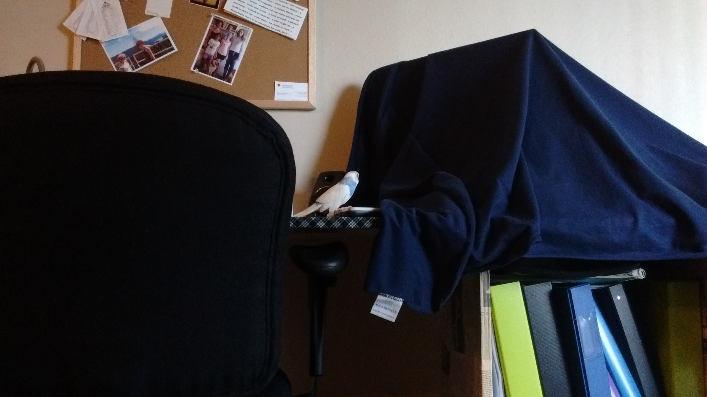
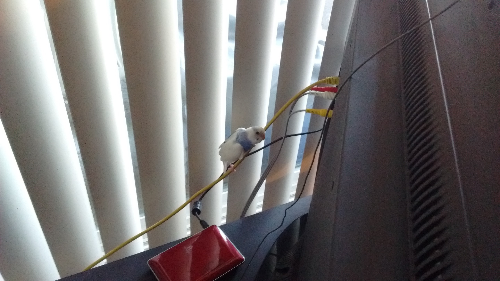
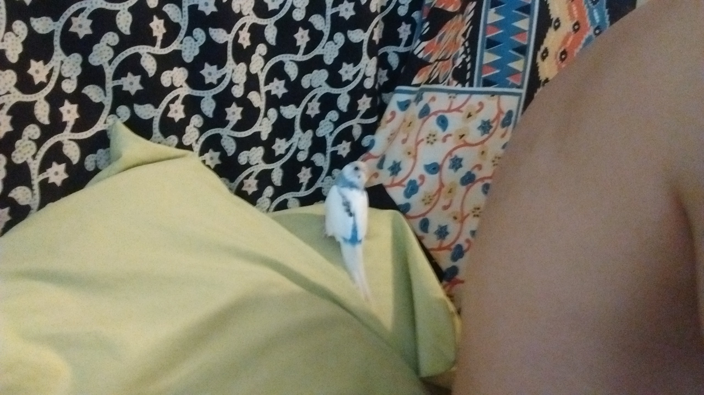
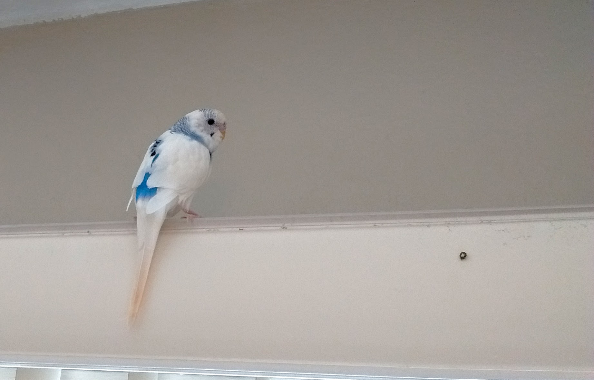

Learning to Fly, Again
When I bought Apollo I let the girl at the store clip his wings, because that was her recommendation since he wasn’t tame. Since I intended to tame him she said it would make that process easier, I guess because he wouldn’t be able to fly away from me. I’m still not sure this was the right thing to, but since his first cage was so small it probably was for the best.
A couple of weeks after Apollo’s first “outing” we had a more successful out of cage experience. He was refusing to come out of his cage again, so I set up a rope perch through the door and sat back to see if he would venture out on his own. Eventually he did! He explored the desk that his cage lives on a bit, then flew towards the window again. But this time he landed on the tv cords instead of falling to the ground. He stayed there, somewhat frozen for quite awhile, but eventually ate some food from my hand there, and seemed quite content. He eventually stepped up onto my finger and let me put him back in his cage without a fuss.
 
The next weekend was Apollo’s first big adventure outside his cage. I got him to come out by getting him to eat from my hand. Once he realized he was out he flew right for Chris who was sitting on the bed. He chilled with us for quite a while, wagging his tail for the first time, and preening himself on my finger. I put up the play stand on top of his cage for the first time, and he hung out up there all afternoon. He flew around a few times, a little spastically, but he managed to find his way back home every time. Apollo seemed the happiest he’d ever been that day, except perhaps for the first day I gave him kale (not long before this) which was the first thing that made him head-bobbing happy. The next day I let him out again and he flew a full circle of the room, and landed back on top of his cage like a pro. The day after that he went for a second lap without landing, but only made it one and a half times around the room, before fluttering to the ground. He found his way back home on his own though.

Apollo started his juvenile molt (the one where baby budgies lose all of their feathers and grow adult sized and coloured ones) around the beginning of April, two months after I got him. I decided to let his new flight feathers grow in without clipping them, because I wanted Apollo to be able to fly properly, with full control. This process took about two months.
After molting for about a month Apollo had grown in about half of his flight feathers and was able to fly for significantly longer periods of time. But he didn’t seem to know where to land. He ran into the wall a few times, most of the time he just gently brushed up against it, but once he hit it hard enough to leave a little bruise on his beak. It got me worried. On the one hand I was super excited that he was able to fly again and was getting some proper exercise, but it hadn’t really occurred to me how far and fast he was built to fly. I started wondering if I was going to have to clip his wings to keep him safe in our small apartment. I decided to wait until all of his flight feathers had grown in to give him some time to get used to it and see how he fared.
The day after he hit the wall he flew about five laps around the room. He just kept going until he lost altitude and gently bumped into the side of the piano. He started doing some acrobatic flying too, little loops and sharp turns, going from the gym to his cage and back again. But since he wasn’t in control of where he landed yet, I went on a mission to tidy things up and to make it as safe in here as I can for him. Eventually he figured out he could land pretty easily on top of the blinds. This was great, because it gave him a safe spot to land that’s always in the same place. Eventually, after all of his flight feathers had fully grown in, Apollo stopped crashing into things and now only lands on or in his cage, on his play stand, on top of the blinds, or on me! And he never loses altitude anymore, no matter how many laps around the room he does, so I will not be clipping his wings ever again.
